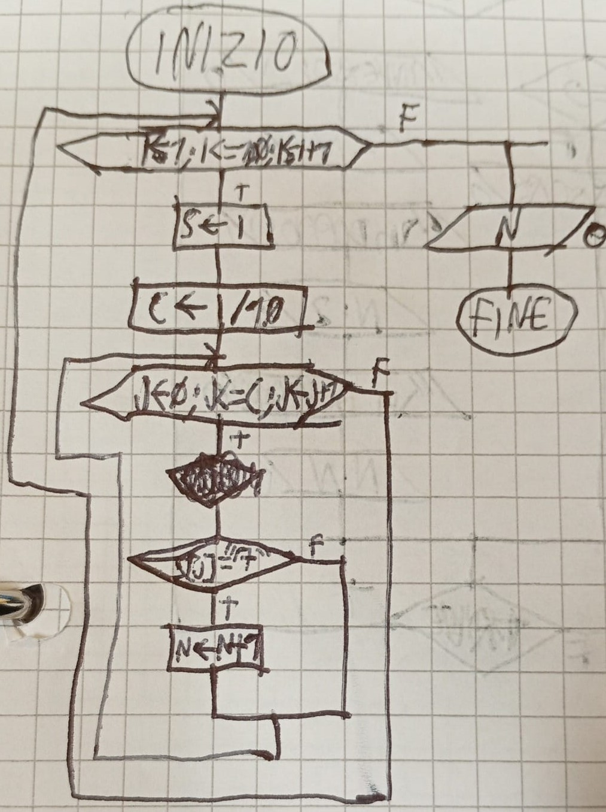

Output: N=0
Lavoro: C; S
Tabella dei Dati
NOMI
TIPO
I/O
DESCRIZIONE
N
int
Var O
Quantità di cifre pari a 7 presenti nell'intervallo
C
int
Var
Quantità di cifre nel numero -1
S
string
Var
Stringa di lavoro sul numero

Script.cpp